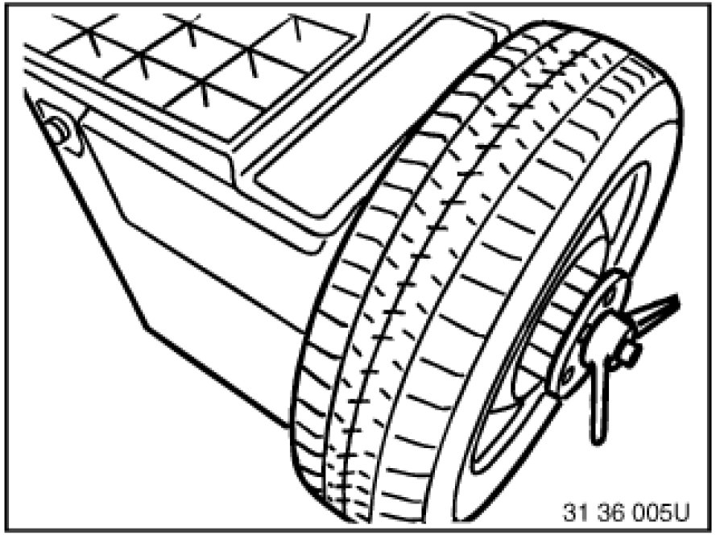
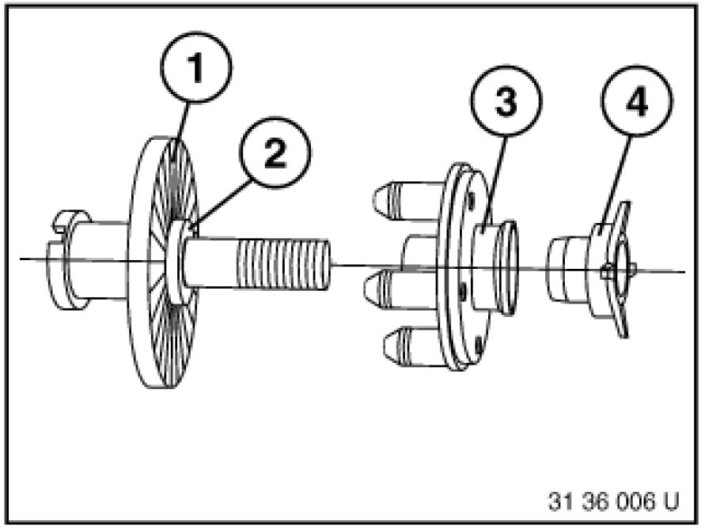
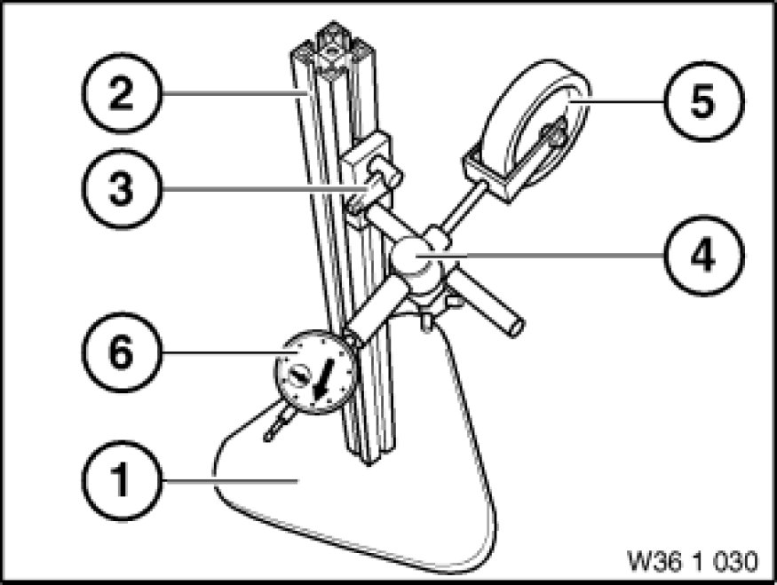
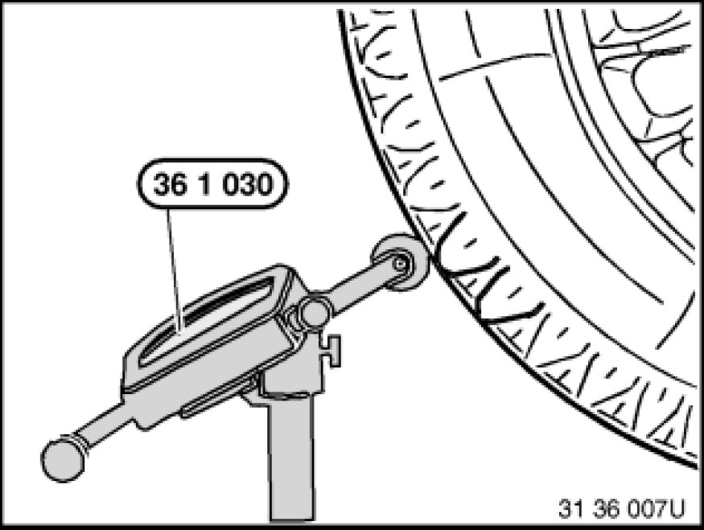
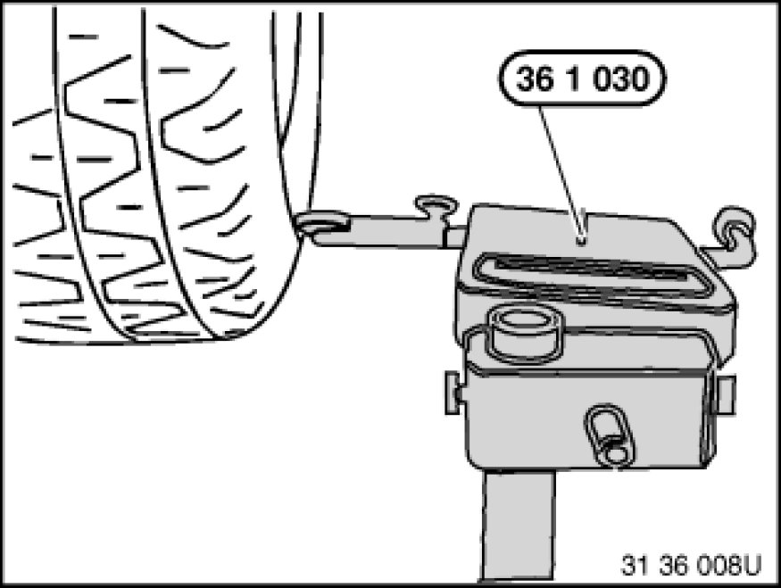

Checking One Road Wheel on Balancing Machine for Face and Radial Runout (Wheel Removed)
36 10 713 - Checking one road wheel on balancing machine for face and radial runout (wheel removed)

Special tools required:
- 36 1 030 36 1 030 Tester
- 36 1 031 36 1 030 Tester
- 36 1 032 36 1 030 Tester
- 36 1 033 36 1 030 Tester
- 36 1 034 36 1 030 Tester
- 36 1 035 36 1 030 Tester
- 36 1 036 36 1 030 Tester

Necessary preliminary tasks:
- Remove wheel Removing or Installing Front or Rear Wheel.

Mount wheel in balancing machine.
To avoid retooling errors, fit the wheel on the balancing machine in the same way as it is also fitted on the car (valve position facing down).

Use suitable wheel centering element supplied with corresponding balancing machine.
1. Basic flange
2. Wheel centering element
3. Type flange
4. Clamping nut
Also refer to section on Workshop Equipment.

Use special tool 36 1 030 36 1 030 Tester for testing.
Special tool 36 1 030 36 1 030 Tester consists of:
(1) - Stand 36 1 031 36 1 030 Tester
(2) - Post with clamp 36 1 032 36 1 030 Tester
(3) - Holder with clamp 36 1 033 36 1 030 Tester
(4) - Clamp 36 1 034 36 1 030 Tester
(5) - Measuring roller 36 1 035 36 1 030 Tester
(6) - Dial gauge 36 1 036 36 1 030 Tester

Position special tool 36 1 030 36 1 030 Tester on tire tread.
Turn wheel by hand and measure max. radial tire runout.
Note:
Measuring device must be vertical to tire tread.

Position special tool 36 1 030 36 1 030 Tester on tire side wall.
Turn wheel by hand and measure max. lateral tire runout.
Note:
Measuring device must be vertical to tire side wall.
Never measure on printed text on tire!
If necessary, check disk wheel (rim) for radial and face runout Checking Rim for Face and Radial Runout.